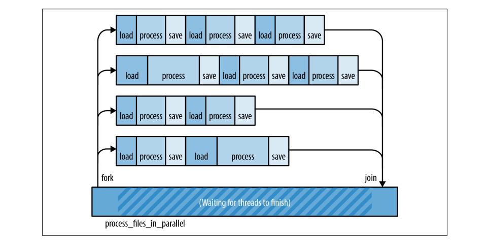
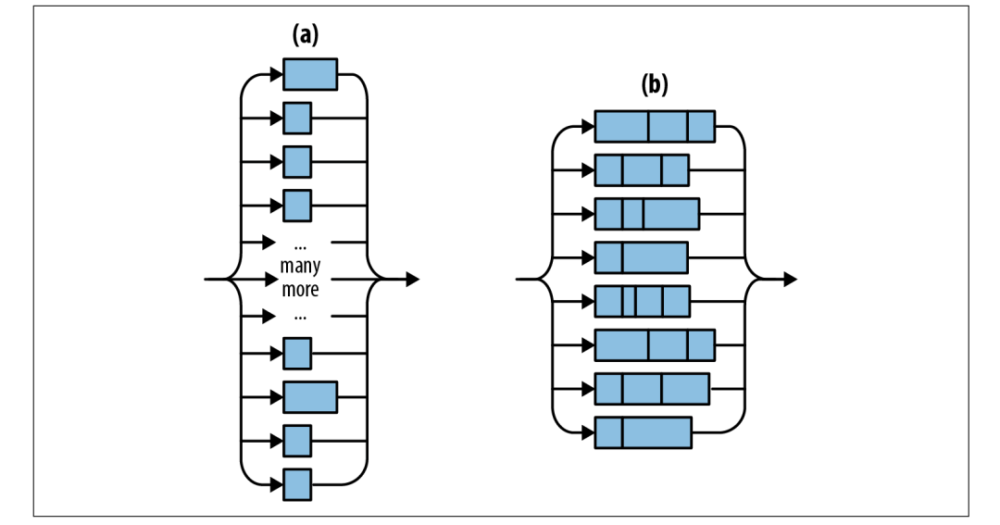
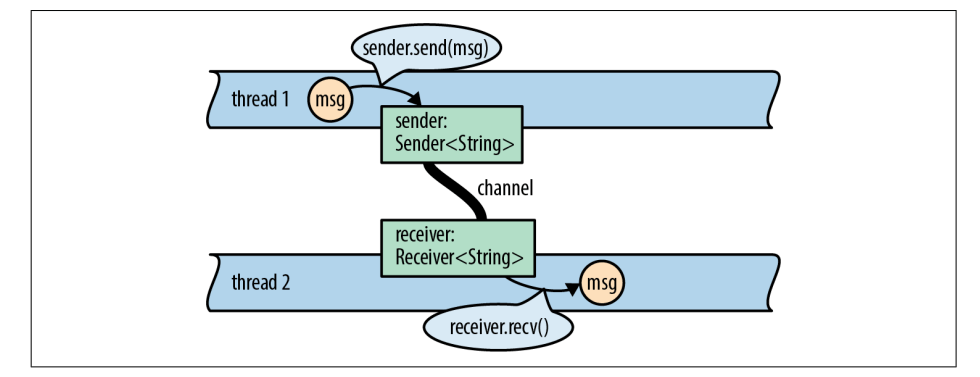
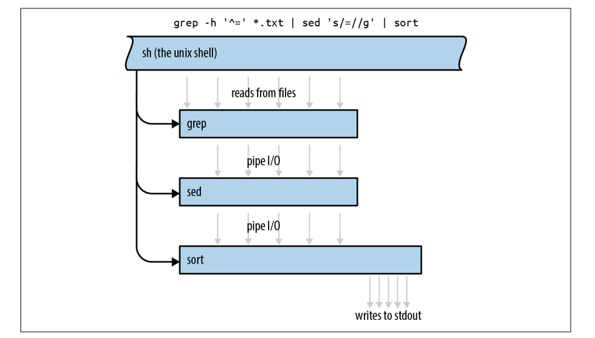
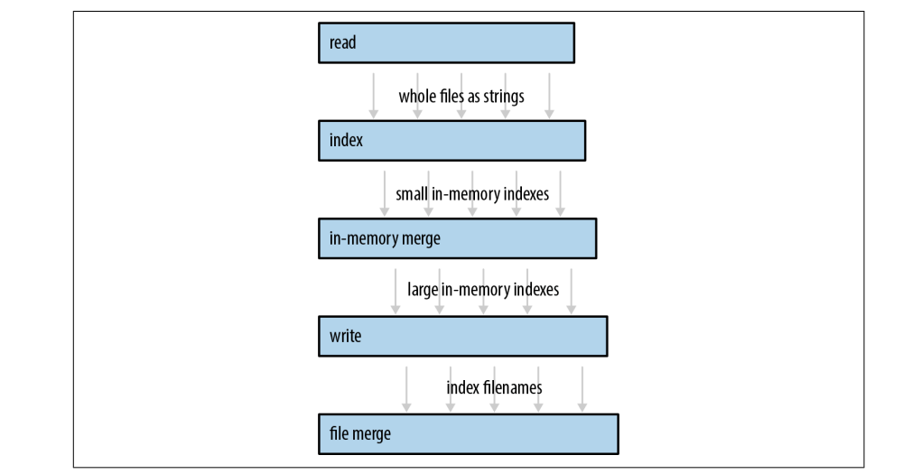
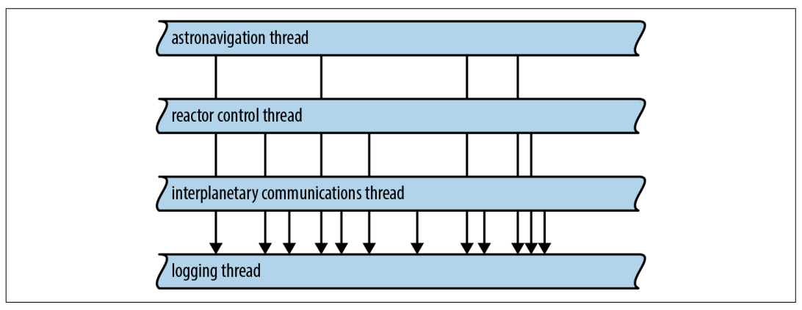
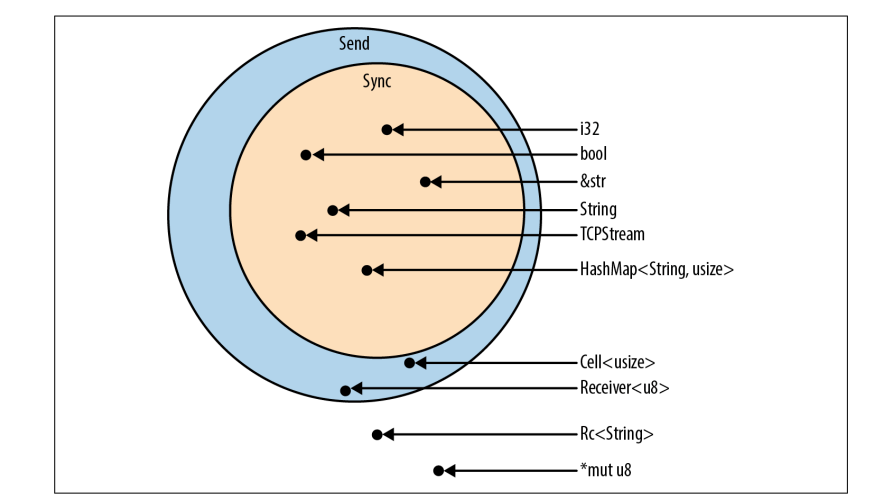
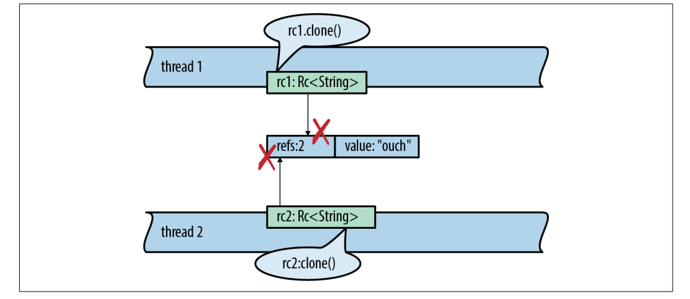

【Rust】并发
Rust 提供了一种非常好的并发使用方法，它不强制所有程序采用单一风格，而是通过安全地支持多种风格，并由编译器强制执行。我们将介绍三种使用 Rust 线程的方法：
Fork-join并行；- 通道（
Chanel）； - 共享可变状态；
在此过程中，将使用到目前为止所学的有关 Rust 语言的所有内容，Rust 对引用、可变性和生命周期的关注在单线程程序中足够有价值，但在并发编程中，这些规则的真正意义变得显而易见。
Fork-Join Parallelism
最简单的用于多线程的案例是处理互不相干的任务，例如，我们要处理大量的文档，可能会这样写：
1 | fn process_files(filenames: Vec<String>) -> io::Result<()> { |
因为每个文档是被单独处理的，所以很容易分成线程来加速处理，如下图所示：

这种模式称为 fork-join，fork 就是启动一个新线程，join 一个线程就是等待它完成，这种模式之所以具有吸引力，有以下原因：
-
没有瓶颈，
fork-join中没有共享资源的锁定，唯一一次任何线程必须等待另一个线程是在最后。同时，每个线程都可以自由运行，这有助于保持较低的任务切换开销； -
性能提升明显，在最好的情况下，通过启动
4个线程，我们可以在4分之一的时间内完成我们的工作，然而我们不应该期望达到这种理想加速。但是对于任何具有独立工作单元的CPU密集型程序都可以期待显着的提升； -
很容易保证序的正确性，只要线程真正隔离，
fork-join程序就是确定性的，无论线程速度如何变化，程序总是产生相同的结果，这是一个没有竞争条件的并发模型。
线程创建和等待
可以使用 std::thread::spawn 启动一个新线程：
1 | use std::thread; |
它接受一个参数，一个 FnOnce 闭包或函数，Rust 启动一个新线程来运行该闭包或函数的代码。新线程是一个真正的操作系统线程，具有自己的堆栈，就像 C++、C# 和 Java 中的线程一样。
下面是一个实现本节开始并行处理文档的例子：
1 | use std::{io, thread}; |
使用 .spawn() 启动一个新线程处理 worklist，它返回 std::thread::JoinHandle，我们使用 move 将 worklist 放进我们新建的闭包函数，这个代价是很低的，不涉及到内存的申请和释放，只是所有权的转移而已。
然后我们通过调用 JoinHandle 的 .join() 方法等待每个线程完成。等待线程完成通常是正确性所必需的，因为 Rust 程序在 main 返回时立即退出，即使其他线程仍在运行，这样未结束的线程就被杀死了。如果这不是想要的，确保在从 main 返回之前等待子线程完成。
跨线程错误处理
我们再来看看 .join() 的方法的使用，它实际上为我们做了两件事：
1 | handle.join().unwrap()?; |
首先，handle.join() 返回一个 std::thread::Result 即使子线程发生 panic，这使得 Rust 中的线程比 C++ 中的线程更加健壮。在 C++ 中，越界数组访问是未定义的行为，并且无法保护系统的其余部分免受影响。在 Rust 中，panic 是安全的并且每个线程都是安全的，线程之间的边界充当panic的防火墙，panic不会自动从一个线程传播到依赖它的线程。而是一个线程中的 panic 会在其他线程中报告为错误结果，整个程序可以轻松恢复。
但是，在我们的程序中，我们没有处理任何错误。而是，我们立即在这个 Result 上使用 .unwrap()，断言它是 Ok 结果而不是 Err 结果。如果子线程确实 panic，那么这个断言就会失败，所以父线程也会 panic，我们明确地将panic从子线程传播到父线程。
其次，handle.join() 将子线程的返回值传递回父线程。我们传递给 spawn 的闭包的返回类型是 io::Result<()>，因为这是 process_files 返回的，这个返回值不会被丢弃。当子线程完成时，它的返回值被保存，并且 JoinHandle::join() 将该值传回给父线程。
在这个程序中，handle.join() 返回的完整类型是 std::thread::Result<std::io::Result<()>>。thread::Result 是 spawn/join API 的一部分，io::Result 是我们应用程序的一部分。
在我们的例子中，在展开 thread::Result 之后，我们在 io::Result 上使用 ? 运算符，将 I/O 错误从子线程显式传播到父线程。
所有这些似乎都相当复杂，但是 Rust 中只有一行代码。Java 和 C# 中的默认行为是将子线程中的异常转储到终端然后丢掉。在 C++ 中，默认设置是中止进程。在 Rust 中，错误是 Result（数据）而不是异常（控制流），它们像任何其他值一样跨线程传递。当使用低级线程 API 时，都需要编写对错误的处理，但 Rust 中只要处理 Result 即可。
跨线程共享不可变数据
假设我们正在进行的分析需要一个包含大量英语单词和短语的数据库，需要对我们之前的方法进行修改：
1 | // before |
由于 glossary 比较大，所以我们通过引用传递，但是我们如何在多线程之间使用它，如果仅仅是下面这样处理，肯定会报错：
1 | fn process_files_in_parallel(filenames: Vec<String>, glossary: &GigabyteMap) -> io::Result<()> |
编译错误：
error[E0621]: explicit lifetime required in the type of `glossary` --> src/lib.rs:75:17
|
61 | glossary: &GigabyteMap)
| ------------ help: add explicit lifetime `'static` to the
type of `glossary`: `&'static BTreeMap<String,
String>`
...
75 | spawn(move || process_files(worklist, glossary))
| ^^^^^ lifetime `'static` required
因为，spawn 启动独立线程，Rust 无法知道子线程将运行多长时间，因此它假设最坏的情况：它假设即使在父线程完成并且父线程中的所有值都消失后，子线程仍可能继续运行。显然，如果子线程要持续那么长时间，它运行的闭包也需要持续那么长时间，但是这个闭包有一个有限的生命周期：它依赖于glossary的引用。
Rust 拒绝此代码是正确的！我们编写此函数的方式是，一个线程可能会遇到 I/O 错误，导致 process_files_in_parallel 在其他线程完成之前退出，子线程最终可能会在主线程释放 glossary 后尝试使用它。
似乎 spawn 过于开放，无法支持跨线程共享引用。我们之前的解决方案是使用move闭包将数据的所有权转移到新线程。这在这里行不通，因为我们有很多线程都需要使用相同的数据。一种安全的替代方法是为每个线程克隆整个词汇表，但由于它很大，我们希望避免这种情况。幸运的是，标准库提供了 std::sync::Arc。
1 | use std::sync::Arc; |
我们更改了glossary的类型：要并行运行分析，调用者必须传入一个 Arc<GigabyteMap>，这是一个指向已移动到堆中的 GigabyteMap 的智能指针，通过使用 Arc::new(giga_map) 创建。
当我们调用glossary.clone() 时，我们正在创建 Arc 智能指针的副本，而不是整个 GigabyteMap，这相当于增加引用计数。
通过此更改，程序可以编译并运行，因为它不再依赖于引用生命周期。只要任何线程拥有 Arc<GigabyteMap>，它就会使地图保持活动状态，即使父线程提前退出。也不存在任何数据竞争，因为 Arc 中的数据是不可变的。
Rayon
Rayon 提供了两种并发机制：
1 | use rayon::prelude::*; |
rayon::join(fn1, fn2) 调用这两个函数并返回两个结果。.par_iter() 方法创建一个 ParallelIterator，一个带有 map、filter 和其他方法的值，很像 Rust 迭代器。在这两种情况下，Rayon 都会尽可能使用自己的工作线程池来分散工作。只需告诉 Rayon 可以并行完成哪些任务，Rayon 管理线程并尽其所能分配工作。
下图说明了对调用 giant_vector.par_iter().for_each(...) 的两种方式。 (a) Rayon 就像它为向量中的每个元素生成一个线程一样。 (b) 在幕后，Rayon 每个 CPU 核心有一个工作线程，效率更高，这个工作线程池由程序的所有线程共享。当数以千计的任务同时进入时，Rayon 会分工。

使用 Rayon 编写的 process_files_in_parallel：
1 | use rayon::prelude::*; |
在背后，Rayon 使用work-stealing技术动态平衡线程间的工作负载。Rayon 支持跨线程共享引用，任何发生在幕后的并行处理都保证在 reduce_with 返回时完成。
Channel
通道是用于将值从一个线程发送到另一个线程的单向管道，换句话说，它是一个线程安全的队列。
下图说明了如何使用通道，它们有点像 Unix 管道：一端用于发送数据，另一端用于接收，两端通常由两个不同的线程拥有。但是 Unix 管道用于发送字节，而通道用于发送 Rust 值。sender.send(item) 将单个值放入通道，receiver.recv() 删除一个，所有权从发送线程转移到接收线程，如果通道为空，receiver.recv() 会阻塞，直到发送一个值。

使用通道，线程可以通过相互传递值来进行通信。这是线程协同工作的一种非常简单的方式，无需使用锁定或共享内存。
这不是一项新技术，Erlang 已经有 30 年的隔离进程和消息传递了。Unix 管道已经存在了将近 50 年。我们倾向于认为管道提供了灵活性和可组合性，而不是并发性，但实际上，它们完成了上述所有工作。下图是 Unix 管道的示例，所有三个程序都可以同时运行。

Rust 通道比 Unix 管道快。发送一个值会移动它而不是复制它，即使你正在移动包含许多兆字节数据的数据结构也是很快的。
Send
接下来我们将使用通道来构建一个创建倒排索引的并发程序，倒排索引是搜索引擎的关键要素之一，每个搜索引擎都处理特定的文档集合，倒排索引是告诉哪些单词出现在哪里的数据库。
我们的程序结构为管道，如下图所示。管道只是使用通道的众多方式之一。

我们将使用总共五个线程，每个线程执行不同的任务。每个线程在程序的生命周期内不断产生输出。例如，第一个线程只是将源文档从磁盘一个一个地读取到内存中。（我们需要一个线程来执行此操作，因为我们将在这里编写最简单的代码，使用 fs::read_to_string，这是一个阻塞 API，我们不希望 CPU 在磁盘工作时处于空闲状态。）这个阶段的输出是每个文档一个长字符串，所以这个线程通过一个字符串通道连接到下一个线程。
首先我们创建新线程处理文档，假设这里的 documents 是 Vec<PathBuf>：
1 | use std::{fs, thread}; |
Channel 是 std::sync::mpsc 模块的一部分，首先来看创建通道的代码：
1 | let (sender, receiver) = mpsc::channel(); |
.channel() 返回了一对值，发送通道和接收通道，我们将使用这个通道来发送每个文件的文本，所以我们有一个 Sender<String> 类型的发送者和一个 Receiver<String> 类型的接收者。我们可以通过编写 mpsc::channel::<String>() 明确地请求字符串通道。但是，我们让 Rust 的类型推断来解决这个问题。
我们使用 thread::spawn 创建了新线程，并且使用 move 将 sender的所有权转移给我们新建的线程：
1 | let handle = thread::spawn(move || |
在成功读取到数据之后，我们使用将内容发送到通道中：
1 | if sender.send(text).is_err() { |
sender.send(text) 将值文本移动到通道中。最终，它将再次转移到接收价值的人手中。无论文本包含 10 行文本还是 10MB 字节，此操作都会复制3个机器字（String 结构体的大小），相应的接收器 .recv() 调用也会复制3个机器字。
send 和 recv 方法都返回结果，但这些方法只有在通道的另一端被丢弃时才会失败。如果 Receiver 已被丢弃，则发送调用失败，否则该值将永远位于通道中但没有 Receiver，任何线程都无法接收它。同样，如果通道中没有等待的值并且 Sender 已被丢弃，则 recv 调用将失败，否则 recv 将永远等待但没有 Sender，任何线程都无法发送下一个值。
在我们的代码中，sender.send(text) 只有当接收者的线程提前退出时才会失败，这对于使用通道的代码很典型，无论这是故意发生的还是由于错误，我们的接收者线程都可以安静地自行关闭。
程序运行结束时返回 Ok(())，闭包返回的是 Result，如果线程遇到错误会立即返回，错误被存储在线程的 JoinHandle 中。
为方便起见，我们的程序将所有这些代码包装在一个函数中，该函数返回接收器（我们尚未使用）和新线程的 JoinHandle：
1 | fn start_file_reader_thread(documents: Vec<PathBuf>) -> (mpsc::Receiver<String>, thread::JoinHandle<io::Result<()>>) |
这个函数启动新线程并且立即返回。
Receiving
我们来创建第二个线程使用一个循环并且调用 .loop() 接收值：
1 | while let Ok(text) = receiver.recv() { |
或者由于 Receiver 是可迭代类型，可以这样写：
1 | for text in receiver { |
这两个循环是等价的，无论哪种方式，如果在控制到达循环顶部时通道恰好是空的，则接收线程将阻塞，直到其他线程发送一个值。当通道为空且 Sender 已被丢弃时，循环将正常退出。在我们的程序中，这会在读取线程退出时自然发生。该线程正在运行一个拥有变量 sender 的闭包，当闭包退出时，发送者被丢弃。现在我们可以为管道的第二阶段编写代码：
1 | fn start_file_indexing_thread( |
此函数生成一个线程，该线程从一个通道（文本）接收字符串值并将 InMemoryIndex 值发送到另一个通道（发送方/接收方）。该线程的工作是获取在第一阶段加载的每个文件，并将每个文档变成一个小的单文件内存倒排索引。
这个线程的主循环很简单，索引文档的所有工作都由函数 InMemoryIndex::from_single_document 完成。我们不会在这里展示它的源代码，但它会在单词边界处拆分输入字符串，然后生成从单词到位置列表的映射。此阶段不执行 I/O，因此不必处理 io::Error。它返回 ()，而不是 io::Result<()>。
Pipeline
其余3个阶段的设计相似，每个人都使用前一阶段创建的接收器。我们对管道其余部分的目标是将所有小索引合并到磁盘上的单个大索引文件中。我们发现最快的方法是分3个阶段，我们不会在这里展示代码，只展示这3个函数的类型签名。
首先，我们在内存中合并索引（第 3 阶段）：
1 | fn start_in_memory_merge_thread(file_indexes: mpsc::Receiver<InMemoryIndex>) |
将这些大索引写入磁盘（第 4 阶段）：
1 | fn start_index_writer_thread(big_indexes: mpsc::Receiver<InMemoryIndex>, output_dir: &Path) |
最后，如果我们有多个大文件，我们使用基于文件的合并算法将它们合并（第 5 阶段）：
1 | fn merge_index_files(files: mpsc::Receiver<PathBuf>, output_dir: &Path) -> io::Result<()> |
现在，我们将所有的代码整合在一起：
1 | fn run_pipeline(documents: Vec<PathBuf>, output_dir: PathBuf) -> io::Result<()> { |
和以前一样，我们使用 .join().unwrap() 将 panic 从子线程显式传播到主线程。这里唯一的另一个不寻常的事情是，没有立即使用 ? 马上，我们将 io::Result 值放在一边，直到我们加入所有四个线程。
该管道比单线程等效管道快 40%，有提升但是我们显然还没有使系统的 I/O 或所有 CPU 饱和。
因为管道就像制造工厂中的装配线：性能受到最慢阶段的吞吐量的限制。一条全新的、未经调整的装配线可能与单位生产一样慢，但装配线奖励有针对性的调整。在我们的案例中，测量表明第二阶段是瓶颈。我们的索引线程使用 .to_lowercase() 和 .is_alphanumeric()，因此它会花费大量时间在 Unicode 表中查找。索引下游的其他阶段大部分时间都在 Receiver::recv 中休眠，等待输入。
这意味着我们应该能够走得更快，随着我们解决瓶颈问题，并行度将会提高。既然知道如何使用通道并且我们的程序是由独立的代码片段组成的，那么很容易找到解决第一个瓶颈的方法。我们可以手动优化第二阶段的代码，就像任何其他代码一样，将工作分成两个或多个阶段，或一次运行多个文件索引线程。
功能和性能
std::sync::mpsc 的 mpsc 部分代表多生产者单消费者，这是对 Rust 通道提供的通信类型的简洁描述。
我们示例程序中的通道将值从单个发送者传送到单个接收者，这是一个相当普遍的情况。但是 Rust 通道也支持多个发送者，以防你需要一个线程来处理来自多个客户端线程的请求，如下图所示：

Sender<T> 实现了 Clone。要获得具有多个 Sender 的 Channel，只需创建一个常规 Channel 并根据需要多次克隆 Sender，可以将每个 Sender 移动到不同的线程。Receiver<T> 不能被克隆，所以如果你需要多个线程从同一个通道接收值，你需要一个 Mutex。
Rust 通道经过精心优化，首次创建通道时，Rust 使用特殊的“一次性”队列实现。如果只通过通道发送一个对象，则开销是最小的，如果发送第二个值，Rust 会切换到不同的队列实现。实际上，它正在为长期稳定做好准备，让通道准备好传输许多值，同时最大限度地减少分配开销。如果克隆 Sender，Rust 必须依靠另一种实现，当多个线程尝试同时发送值时，这种实现是安全的。但即使是这三种实现中最慢的也是无锁队列，所以发送或接收一个值至多是几个原子操作和一个堆分配，再加上移动本身。仅当队列为空并且接收线程因此需要使自己进入睡眠状态时才需要系统调用。当然，在这种情况下，通过Chaneel的流量无论如何都不会达到最大值。
尽管进行了所有优化工作，但应用程序很容易在通道性能方面犯一个错误：发送值的速度超过了接收和处理的速度。这会导致越来越多的积压值在渠道中累积。例如，在我们的程序中，我们发现文件读取线程（阶段 1）可以比文件索引线程（阶段 2）更快地加载文件。结果是数百兆字节的原始数据将从磁盘读取并立即填充到队列中。
这种不当行为会消耗内存并伤害局部性。更糟糕的是，发送线程继续运行，占用 CPU 和其他系统资源来发送更多的值，而这些资源正好在接收端最需要这些资源。
这里 Rust 再次从 Unix 管道中获取一个技巧，Unix 使用了一个优雅的技巧来提供一些背压，以便快速发送者被迫放慢速度：Unix 系统上的每个管道都有固定的大小，如果一个进程试图写入一个暂时已满的管道，系统会简单地阻止该进程 直到管道中有空间，Rust 也有类似的，称为同步通道：
1 | use std::sync::mpsc; |
同步通道与常规通道完全相同，只是在创建它时，指定它可以保存多少个值。对于同步通道，sender.send(value) 可能是一个阻塞操作。毕竟，这个想法是阻塞并不总是坏事。在我们的示例程序中，将 start_file_reader_thread 中的通道更改为可容纳 32 个值的 sync_channel 将我们的基准数据集的内存使用量减少了三分之二，而不会降低吞吐量。
Send、Sync
到目前为止，我们一直认为所有值都可以在线程之间自由移动和共享。这基本上是正确的，但 Rust 的完整线程安全取决于两个内置 Trait，std::marker::Send 和 std::marker::Sync。
-
实现
Send的类型可以安全地按值传递给另一个线程，它们可以跨线程移动； -
实现
Sync的类型可以安全地通过非mut引用传递给另一个线程，它们可以跨线程共享；
这里的安全指的是：没有数据竞争和其他未定义的行为，前面我们使用闭包将 Vec<String> 从父线程传递给每个子线程。我们当时没有指出，但这意味着 vector 及其字符串在父线程中分配，但在子线程中释放。Vec<String> 实现 Send 的事实是：Vec 和 String 内部使用的内存分配器是线程安全的。（如果要使用快速但非线程安全的分配器编写自己的 Vec 和 String 类型，则必须使用 非 Send 类型来实现它们，例如不安全的指针。Rust 会推断 NonThreadSafeVec 和 NonThreadSafeString 类型不是 Send 并将它们限制为单线程使用，但这比较少见。）
如下图所示，大多数类型都是 Send 和 Sync， 甚至不必使用 #[derive]，Rust 会自动处理。如果结构或枚举的字段为 Send，则结构或枚举为Send，如果其字段为Sync，则为Sync。

有些类型是Send，但不是 Sync。这通常是有目的的，例如 mpsc::Receiver，它保证 mpsc 通道的接收端一次只被一个线程使用。
少数既不是 Send 也不是 Sync 的类型主要是那些以非线程安全的方式使用可变性的类型。例如，考虑 std::rc::Rc<T>，引用计数智能指针的类型。
如果 Rc<String> 是 Sync，允许线程通过共享引用共享单个 Rc，会发生什么？如果两个线程碰巧同时尝试克隆 Rc，如下图所示，我们就会发生数据竞争，因为两个线程都会增加共享引用计数。引用计数可能变得不准确，从而导致 use-afterfree 或 double free 行为。

而且 Rust 是不会让这样的代码编译通过的：
1 | use std::rc::Rc; |
编译出错：
error[E0277]: `Rc<String>` cannot be sent between threads safely
--> src/main.rs:9:5
|
9 | thread::spawn(move || {
| _____^^^^^^^^^^^^^_-
| | |
| | `Rc<String>` cannot be sent between threads safely
10 | | // error
11 | | rc2.clone();
12 | | });
| |_____- within this `[closure@src/main.rs:9:19: 12:6]`
|
= help: within `[closure@src/main.rs:9:19: 12:6]`, the trait `Send` is not implemented for `Rc<String>`
= note: required because it appears within the type `[closure@src/main.rs:9:19: 12:6]`
note: required by a bound in `spawn`
--> /Users/fudenglong/.rustup/toolchains/nightly-aarch64-apple-darwin/lib/rustlib/src/rust/library/std/src/thread/mod.rs:646:8
|
646 | F: Send + 'static,
| ^^^^ required by this bound in `spawn`
可以看到 Send 和 Sync 帮助 Rust 加强线程安全，它们在跨线程边界传输数据的函数的类型签名中显示为边界。当生成一个线程时，传递的闭包必须是 Send，这意味着它包含的所有值都必须是 Send。类似地，如果想通过一个通道向另一个线程发送值，这些值必须是 Send。
迭代 Pipeline
如果我们能使用迭代器的方法处理我们之前的倒排索引，就会显得很清晰，例如：
1 | documents.into_iter() |
因为 Trait 允许我们为标准库类型添加功能，所以我们可以这样做：
1 | use std::sync::mpsc; |
简而言之，这就是 Rust 的特点：我们可以自由地为该语言中的几乎每个迭代器添加一个新方法。
Beyond Pipelines
前面我们使用管道作为示例，因为管道是使用通道的一种很好的、明显的方式，每个人都理解他们。它们是具体的、实用的和确定性的。不过，通道不仅仅对管道有用。它们也是向同一进程中的其他线程提供任何异步服务的一种快速、简单的方法。
例如，假设想在自己的线程上进行日志记录，其他线程可以通过通道向日志线程发送日志消息；由于可以克隆通道的Sender，因此许多客户端线程可以拥有Sender，而接收者处理只有一个。日志记录线程可以在需要时轮换日志文件，它不必与其他线程进行任何协调。
到目前为止，已经介绍的工具——用于高度并行计算的 fork-join、用于松散连接组件的通道——对于广泛的应用程序来说已经足够了，但还不够。
共享可变状态
如何在多个线程之间共享可变数据？
-
可以通过创建一个新线程来解决此问题，该线程的全部工作是管理此可变数据，其他线程将通过通道与其通信。当然，这会花费一个线程，这会产生一些操作系统开销。
-
另一种选择是使用
Rust提供的工具来安全地共享可变数据，互斥锁、读/写锁、条件变量和原子整数。
什么是 Mutex？
互斥体（或锁）用于强制多个线程在访问某些数据时轮流进行，我们将在下一节介绍 Rust 的互斥锁。首先，回忆一下其他语言中的互斥锁是什么是有意义的。 C++ 中互斥锁的简单使用可能如下所示：
1 | void FernEmpireApp::JoinWaitingList(PlayerId player) { |
调用 mutex.Acquire() 和 mutex.Release() 标记此代码中关键部分的开始和结束。对于程序中的每个互斥体，一次只能在临界区内运行一个线程。 如果一个线程处于临界区，则调用 mutex.Acquire() 的所有其他线程将阻塞，直到第一个线程到达 mutex.Release()。
我们说互斥体保护数据：在这种情况下，互斥体保护 waitingList。但是，程序员有责任确保每个线程在访问数据之前总是获取互斥锁，然后再释放它。
它们防止数据竞争，即竞争线程同时读取和写入相同内存的情况。即使不存在数据竞争，即使所有读取和写入都按程序顺序一一发生，如果没有互斥锁，不同线程的操作也可能以任意方式交错。
当然，所有这些实际上都是同一个原因：不受控制的竞争条件使编程变得棘手，而互斥锁就是为了解决这种混乱。然而，在大多数语言中，互斥锁很容易搞砸。 在 C++ 中，与大多数语言一样，数据和锁是独立的对象。
1 | class FernEmpireApp { |
但是即使有注释，编译器也不能在这里强制安全访问。当一段代码忽略获取互斥锁时，我们会得到未定义的行为。实际上，这意味着极难重现和修复的错误。即使在 Java 中，对象和互斥体之间存在一些概念上的关联，这种关系也不是很深。编译器不会尝试强制执行它，实际上，受锁保护的数据很少完全是关联对象的字段，它通常包含多个对象中的数据。
Mutex<T>
其他语言的锁看起来不那么好有两点：一个是锁和数据独立，一个是编译器不能进行强制检查可能存在竞争的数据是否受锁保护。继续前面的例子，我们来看 Rust 的解决方案：
1 | use std::sync::Arc; |
不像 c++，数据是锁的一部分。创建一个新的 Mutex 看起来像创建一个新的 Box 或 Arc，但 Box 和 Arc 表示堆分配，Mutex 只是关于锁定。如果希望在堆中分配 Mutex，则必须像我们在这里通过对整个应用程序使用 Arc::new 和仅对受保护数据使用 Mutex::new 所做的那样。这些类型通常一起使用：Arc 可方便地跨线程共享事物，而 Mutex 可方便地用于跨线程共享的可变数据。
我们可以看下如何使用锁，唯一获取数据的方式是使用 self.waiting_list.lock()，它可以一直阻塞到数据可以获取。guard 的类型是 MutexGuard<WaitingList>，由于实现了 Deref，所以我们可以直接调用 guard.push(player)：
1 | impl FernEmpireApp { |
guard 甚至允许我们借用对基础数据的直接引用。Rust 的生命周期系统确保这些引用不会超过 guard 本身。如果不持有锁，就无法访问 Mutex 中的数据。当 guard 离开作用域时，锁被释放，通常这发生在块的末尾，但也可以手动删除它：
1 | if guard.len() == GAME_SIZE { |
mut 和 Mutex
上面的例子中，我们的 join_waiting_list 方法的第一个参数竟然是 &self：
1 | fn join_waiting_list(&self, player: PlayerId) |
但是我们调用的 push 方法需要可变引用：
1 | pub fn push(&mut self, item: T) |
互斥锁提供对内部数据的独占（mut）访问，即使许多线程可能对互斥锁本身具有共享（非mut）访问。Rust 的类型系统告诉我们 Mutex 做了什么。它动态地强制执行独占访问，这通常由 Rust 编译器在编译时静态完成，这其实类似于 内部可变性。
Mutex 无法解决的问题
几乎可以肯定，Rust 互斥锁的设计会让你比以往任何时候都更系统、更明智地使用互斥锁。但是值得停下来思考一下 Rust 的安全保证可以和不能帮助什么。安全的 Rust 代码不能触发数据竞争，这是一种特定类型的错误，其中多个线程同时读取和写入相同的内存，从而产生毫无意义的结果。这很棒：数据竞争总是错误的，在真正的多线程程序中并不罕见。但是，使用互斥锁的线程会遇到 Rust 无法解决其他一些问题：
-
有效的
Rust程序不能有数据竞争，但它们仍然可以有其他竞争条件——程序的行为取决于线程之间的时间，因此可能因运行而异。一些竞争条件是良性的。有些表现为一般的脆弱性和难以修复的错误，以非结构化方式使用互斥锁会引发竞争条件； -
共享可变状态也会影响程序设计。通道在代码中充当抽象边界，便于分离隔离的组件以进行测试，互斥锁鼓励“仅添加方法”的工作方式，这可能导致相互关联的代码的整体块；
-
最后，互斥锁并不像一开始看起来那么简单，正如接下来的两节将展示的那样；
Deadlock
线程可以通过尝试获取它已经持有的锁来使自己死锁：
1 | let mut guard1 = self.waiting_list.lock().unwrap(); |
假设第一次调用 self.waiting_list.lock() 成功，获得了锁。第二个调用看到锁被持有，所以它阻塞，等待它被释放。它将永远等待。等待线程是持有锁的线程。
换句话说，互斥锁中的锁不是递归锁。
这里的错误很明显。在实际程序中，两个 lock() 调用可能在两个不同的方法中，其中一个调用另一个。每个方法的代码，分开来看，看起来不错。还有其他方法可以导致死锁，涉及多个线程，每个线程一次获取多个互斥锁。 Rust 的借用系统无法做到避免死锁。最好的保护措施是将关键部分保持在较小的范围内：进入，完成工作，然后退出。
也有可能与渠道陷入僵局。例如，两个线程可能会阻塞，每个线程都在等待从另一个接收消息。然而，再一次，好的程序设计可以让你高度相信这在实践中不会发生。在管道中，就像我们的倒排索引构建器一样，数据流是非循环的。在这样的程序中，死锁的可能性与在 Unix shell 管道中一样。
Poisoned Mutexes
Mutex::lock() 返回 Result 的原因与 JoinHandle::join() 所做的相同：如果另一个线程发生panic，则优雅地失败。当我们编写 handle.join().unwrap() 时，我们是在告诉 Rust 将 panic 从一个线程传播到另一个线程，mutex.lock().unwrap() 类似。
如果线程在持有 Mutex 时发生 panic，Rust 会将 Mutex 标记为 Poisoned。任何后续尝试锁定 Poisoned Mutex 都会得到错误结果。如果发生这种情况，我们的 .unwrap() 调用会告诉 Rust panic，将 panic 从另一个线程传播到这个线程。
有一个Poisoned互斥锁有多糟糕？毒药听起来很致命，但这种情况并不一定是致命的。panic是安全的，一个 panic 线程使程序的其余部分处于安全状态。
因此，互斥锁因 panic 而 Poisoned 原因并不是因为害怕未定义的行为。相反，担心的是一直在使用不变量进行编程。由于程序在没有完成它正在做的事情的情况下 panic 并退出了关键部分，可能已经更新了受保护数据的某些字段但没有更新其他字段，因此不变量现在可能已损坏。 Rust 会毒化互斥体，以防止其他线程无意中误入这种损坏的情况并使其变得更糟。但仍然可以锁定中毒的互斥体并访问其中的数据，完全强制互斥，请看 PoisonError::into_inne() 的文档。
多消费者通道
我们前面提到，Rust 的通道是多生产者，单消费者。或者更具体地说，一个通道只有一个 Receiver。我们不能有一个线程池，其中许多线程使用单个 mpsc 通道作为共享工作列表。
然而，事实证明有一个非常简单的解决方法，只使用标准库片段。我们可以在 Receiver 周围添加一个 Mutex 并无论如何共享它。这是一个这样做的模块：
1 | pub mod shared_channel { |
读写锁
互斥锁只有一个 .lock()，而std::sync::RwLock 有两种锁方法，.read() 和 .write()，RwLock::write 方法类似于 Mutex::lock。它等待对受保护数据的独占 mut 访问。RwLock::read 方法提供 non mut 访问，其优点是不必等待，因为许多线程可以安全地一次读取。使用互斥锁，在任何给定时刻，受保护的数据只有一个读取器或写入器（或没有）。使用std::sync::RwLock，它可以有一个 Writer 或多个 Reader，就像通常的 Rust 引用一样。
1 | struct FernEmpireApp { |
多读单写是 Rust 借用系统的核心。
条件变量
通常一个线程需要等到某个条件变为真：
-
在服务器关闭期间，主线程可能需要等待，直到所有其他线程完成退出；
-
当一个工作线程无事可做时，它需要等待，直到有一些数据要处理；
-
实现分布式共识协议的线程可能需要等到一定数量的对等方做出响应；
在 Rust 中，std::sync::Condvar 类型实现了条件变量，它有方法 .wait() 和 .notify_all()，.wait() 会阻塞到直到有其他线程调用 .notify_all() 或者 notify_one()。
当等待的条件到来时，可以使用 .notify_all() 或者 notify_one() 通知其他线程：
1 | self.has_data_condvar.notify_all(); |
为了进入休眠等待条件变为 true，可使用 Condvar::wait()：
1 | while !guard.has_data() { |
这个 while 循环是条件变量的标准习惯用法。 但是，Condvar::wait 的签名是不寻常的。它按值获取 MutexGuard 对象，使用它，并在成功时返回一个新的 MutexGuard。
原子锁
std::sync::atomic 模块包含用于无锁并发编程的原子类型。这些类型与标准 C++ 原子基本相同，但有一些额外的：
-
AtomicIsize和AtomicUsize是对应于单线程isize和usize类型的共享整数类型； -
AtomicI8、AtomicI16、AtomicI32、AtomicI64及其无符号变体（如AtomicU8）是共享整数类型，对应于单线程类型i8、i16等。 -
AtomicBool是一个共享的布尔值； -
AtomicPtr<T>是不安全指针类型*mut T的共享值；
说多个线程可以一次读取和写入一个原子值而不会导致数据竞争。与通常的算术和逻辑运算符不同，原子类型公开了执行原子操作的方法、单独的加载、存储、交换和算术操作，这些操作作为一个单元安全发生，即使其他线程也在执行触及同一内存的原子操作。递增一个名为 atom 的 AtomicIsize 如下所示：
1 | use std::sync::atomic::{AtomicIsize, Ordering}; |
这些方法可以编译成专门的机器语言指令。在 x86-64 架构上，此 .fetch_add() 调用编译为 lock incq 指令，其中普通的 n += 1 可能编译为普通的 incq 指令。Rust 编译器还必须放弃围绕原子操作的一些优化，因为与正常的加载或存储不同，它可以合法地立即影响其他线程或被其他线程影响。
参数 Ordering::SeqCst 是内存排序，内存排序类似于数据库中的事务隔离级别，内存顺序对于程序的正确性至关重要，而且它们很难理解和推理。令人高兴的是，选择顺序一致性（最严格的内存排序）的性能损失通常非常低——与将 SQL 数据库置于 SERIALIZABLE 模式的性能损失不同。因此，如有疑问，请使用 Ordering::SeqCst。 Rust 从标准 C++ 原子继承了其他几个内存排序，对存在的本质和因果关系有各种较弱的保证。
原子的一种简单用途是取消。 假设我们有一个线程正在执行一些长时间运行的计算，例如渲染视频，并且我们希望能够异步取消它。 问题是与我们希望它关闭的线程进行通信。 我们可以通过共享的 AtomicBool 做到这一点：
1 | use std::sync::Arc; |
这段代码创建了两个 Arc<AtomicBool> 智能指针，它们指向同一个堆分配的 AtomicBool，其初始值为 false。 第一个名为 cancel_flag，将留在主线程中。 第二个，worker_cancel_flag，将被移动到工作线程。
下面是工作线程中的示例：
1 | use std::sync::atomic::Ordering; |
我们使用 load(Ordering::SeqCst) 来检查循环要不要继续，我们可以在主线程中取消工作线程继续执行任务：
1 | // Cancel rendering. |
当然，还有其他方法可以实现这一点，这里的 AtomicBool 可以替换为 Mutex<bool> 或通道，主要区别在于原子具有最小的开销，原子操作从不使用系统调用，加载或存储通常编译为单个 CPU 指令。
原子是内部可变性的一种形式，例如 Mutex 或 RwLock，因此它们的方法通过共享（非 mut）引用来获取自身，这使得它们可用作简单的全局变量。
全局变量
Rust 尽其所能阻止全局可变状态，用 const 声明的常量当然是不可变的。默认情况下，静态变量也是不可变的，因此没有办法获得一个 mut 引用。静态可以声明为 mut，但随后访问它是不安全的，Rust 对线程安全的坚持是所有这些规则的主要原因。
全局可变状态往往使程序的各个部分更紧密耦合，更难测试，也更难在以后更改。尽管如此，在某些情况下还是没有合理的替代方案，所以我们最好找到一种安全的方法来声明可变静态变量。
我们可以使用原子整数保证线程安全，例如：
1 | use std::sync::atomic::AtomicUsize; |
可以使用以下方式增加它：
1 | use std::sync::atomic::Ordering; |
原子全局变量仅限于简单的整数和布尔值。尽管如此，创建任何其他类型的全局变量都相当于解决两个问题。
首先，变量必须以某种方式成为线程安全的，否则它就不能是全局的：为了安全起见，静态变量必须是 Sync 和 non-mut。但是 Rust 有用于安全共享变化值的类型：Mutex、RwLock 和原子类型，即使声明为非 mut，这些类型也可以修改。
其次，静态初始化器只能调用特别标记为 const 的函数，编译器可以在编译期间对其进行评估。换句话说，它们的输出是确定性的；它仅取决于它们的参数，而不取决于任何其他状态或 I/O。这样，编译器可以将该计算的结果作为编译时常量嵌入，这类似于 C++ constexpr。
Atomic 类型（AtomicUsize、AtomicBool 等）的构造函数都是 const 函数，这使我们能够更早地创建静态 AtomicUsize。其他一些类型，如 String、Ipv4Addr 和 Ipv6Addr，也有简单的构造函数，它们也是 const。
也可以通过简单地在函数的签名前加上 const 来定义自己的 const 函数。Rust 将 const 函数的功能限制为一小组操作，这些操作足够有用，但仍然不允许任何不确定的结果。const 函数不能将类型作为泛型参数，只能作为生命周期，并且不能分配内存或对原始指针进行操作，即使在不安全的块中也是如此。但是，我们可以使用算术运算、逻辑运算以及其他 const 函数。例如，我们可以创建方便的函数来简化静态和常量的定义并减少代码重复：
1 | const fn mono_to_rgba(level: u8) -> Color { |
但是我们不能写下面这样的函数：
1 | static HOSTNAME: Mutex<String> = Mutex::new(String::new()); // error: calls in statics are limited to |
因为 Mutex::new 不是 const fn，而 AtomicUsize::new() 和 String::new() 是的。为了绕过这些限制，我们可以使用 lazy_static：
1 | use lazy_static::lazy_static; |
或者使用 lazy_static：
1 | use lazy_static::lazy_static; |
同样的技术适用于其他复杂的数据结构，如 HashMaps 和 Deques。 使用 lazy_static！ 对静态数据的每次访问都会产生很小的性能成本。 该实现使用 std::sync::Once，这是一种为一次性初始化而设计的低级同步原语。在幕后，每次访问惰性静态时，程序都会执行原子加载指令来检查初始化是否已经发生。